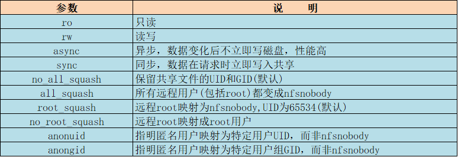

一、NFS网络文件系统介绍
NFS：Network File System 网络文件系统，基于内核的文件系统。Sun公司开发，通过使用NFS，
用户和程序可以像访问本地文件一样访问远端系统上的文件，基于RPC（远程过程调用）实现
RPC采用C/S模式。客户机请求程序调用进程发送一个有进程参数的调用信息到服务进程，然后等待应答信息。
在服务器端，进程保持睡眠状态直到调用信息到达为止。当一个调用信息到达，服务器获得进程参数，
计算结果，发送答复信息，然后等待下一个调用信息，最后，客户端调用进程接收答复信息，获得进程结果，
然后调用执行继续进行。
NFS优势：
节省本地存储空间，将常用的数据如：home目录,存放在一台NFS服务器上且可以通过网络访问，那么本
地终端将可以减少自身存储空间的使用，适合在局域网使用
用户不需要在网络中的每个机器上都建有Home目录，Home目录可以放在NFS服务器上且可以在网络上
被访问使用。
一些存储设备如软驱、CDROM和Zip（一种高储存密度的磁盘驱动器与磁盘）等都可以在网络上被别的
机器使用。这可以减少整个网络上可移动介质设备的数量。
NFS常见应用场景：
多个机器共享一台CDROM或者其他设备。这对于在多台机器中安装软件来说更加便宜跟方便。
在大型网络中，配置一台中心NFS服务器用来放置所有用户的home目录可能会带来便利。这些目录能被输出到网络以便用户不管在哪台工作站上登录，总能得到相同的home目录。
不同客户端可在NFS上观看影视文件，节省本地空间。
- 在客户端完成的工作数据，可以备份保存到NFS服务器上用户自己的路径下。
二、NFS服务介绍
软件包：nfs-utils(系统自带)
Kernel支持:nfs.ko
端口：2049(nfsd), 其它端口由rpcbind(111)分配
配置文件：/etc/exports,/etc/exports.d/*.exports
CentOS 7不支持同一目录同时用nfs和samba共享，因为使用锁机制不同
相关软件包：rpcbind（必须），tcp_wrappers
CentOS 6开始portmap进程由rpcbind代替
NFS服务主要进程：
rpc.nfsd 最主要的NFS进程，管理客户端是否可登录
rpc.mountd 挂载和卸载NFS文件系统，包括权限管理
rpc.lockd 非必要，管理文件锁，避免同时写出错
rpc.statd 非必要，检查文件一致性，可修复文件
日志：/var/lib/nfs/
配置防火墙，开放NFS服务
配置NFS使用固定端口
1 | vim /etc/sysconfig/nfs |
防火墙除开放上述端口，还需开放TCP和UDP的111和2049共4个端口
导出的文件系统的格式：
/dir 主机1(opt1,opt2) 主机2(opt1,opt2)…
#开始为注释
主机格式：
单个主机：ipv4，ipv6，FQDN
IP networks：两种掩码格式均支持
172.18.0.0/255.255.0.0
172.18.0.0/16
wildcards：主机名通配，例如*.magedu.com，IP不可以
netgroups：NIS域的主机组，@group_name
anonymous：表示使用*通配所有客户端
每个条目指定目录导出到的哪些主机，及相关的权限和选项
默认选项：**(ro,sync,root_squash,no_all_squash)**

示例：在/etc/exports文件中定义导出目录
1 | /myshare server.example.com |
NFS工具：
rpcinfo
rpcinfo -p hostname
rpcinfo -s hostname 查看RPC注册程序
exportfs
-v 查看本机所有NFS共享
-r 重读配置文件，并共享目录
-a 输出本机所有共享
-au 停止本机所有共享
查看指定NFS服务器提供的共享目录文件
showmount -e NfsServerIP
mount.nfs 挂载工具
NFSv4支持通过挂载NFS服务器的共享“根”，从而浏览NFS服务器上的共享目录列表
mount nfsserver:/ /mnt/nfs
三、NFS挂载及autofs自动挂载
客户端NFS挂载：
基于安全考虑，建议使用nosuid,nodev,noexec挂载选项
NFS相关的挂载选项：
fg（默认）前台挂载，bg后台挂载
hard（默认）持续请求，soft 非持续请求
intr 和hard配合，请求可中断
rsize和wsize 一次读和写数据最大字节数，rsize=32768
_netdev 无网络不挂载
示例：
默认NFS v4版本挂载
mount -o rw,nosuid,fg,hard,intr 192.168.0.1:/testdir /mnt/nfs/
也可指定以其他NFS版本挂载
mount -o vers=3 192.168.2.7:/data/nfsdir2 /mnt/nfs2
开机挂载:/etc/fstab
192.168.0.1:/public /mnt/nfs nfs defaults 0 0
autofs自动挂载：
可使用autofs按需要挂载NFS共享，在空闲时自动卸载
由autofs包提供
系统管理器指定由/etc/auto.master自动挂载器守护进程控制的挂载点
自动挂载监视器访问这些目录并按要求挂载文件系统
文件系统在失活的指定间隔5分钟后会自动卸载
为所有导出到网络中的NFS启用特殊匹配 -host 至“browse”
参看帮助：man 5 autofs
支持含通配符的目录名
server:/export/&
四、实验：实现NFS服务
前期准备：
虚拟机两台
NFS服务器：CentOS 7.4 IP：192.168.2.7
客户端：CentOS 7.4 IP：192.168.2.11
NFS服务器端：
1 | systemctl start nfs-server |
也可基于IP控制NFS访问(安全性不高，可被冒充)
1 |
重启NFS服务
1 | exportfs –r |
查看本机已生效的NFS共享文件
1 | exportfs -v |
客户端：
查看NFS服务器提供的文件
1 | showmount -e 192.168.2.7 |
创建挂载NFS的目录
1 |
挂载nfsdir1，默认NFS v4版本挂载
1 | mount 192.168.2.7:/data/nfsdir1 /mnt/nfs1 |
也可指定以其他NFS版本挂载
1 | mount -o vers=3 192.168.2.7:/data/nfsdir2 /mnt/nfs2 |
NFS也是一种文件系统，可用mount命令查看已挂载的NFS文件系统
写入/etc/fstab文件中实现永久挂载

nfs1目录只读挂载，无法创建文件
nfs2目录可创建文件，文件所有者，所属组映射为nfsnobody
nfs3目录因为加了no_root_squash，root创建文件不影响到nfsnobody
五、实验：实现NFS伪根(RHCE)
前期准备：
虚拟机两台
NFS服务器：CentOS 7.4 IP：192.168.2.7
客户端：CentOS 7.4 IP：192.168.2.11
NFS服务器端：
1 | mkdir /app/nfsdir1 |
NFS配置文件
1 | vim /etc/exports.d/nfsroot.exports |
重启NFS服务
1 | exportfs –r |
查看本机生效的NFS文件
1 | exportfs –v |
客户端：
查看NFS服务器提供的文件
1 | showmount -e 192.168.2.7 |
挂载伪根目录
1 | mount 192.168.2.7:/nfsroot /mnt |

六、实验：实现家目录NFS自动绝对路径、相对路径挂载
前期准备：
虚拟机三台
NFS服务器：CentOS 6.9 IP：192.168.30.13
客户端1：CentOS 7.4 IP：192.168.2.7
客户端2：CentOS 7.4 IP：192.168.2.11
实验预期：
客户端1实现相对路径挂载，客户端2实现绝对路基挂载
NFS服务器：
开启nfs服务
1 | service rpcbind start |
建立用户nfs1，nfs2
1 | useradd -d /data/nfs/nfs1 -u 2001 nfs1 |
编写测试文件
1 | touch /data/nfs/nfs1/test1 |
编写nfs共享配置
1 | vim /etc/exports |
相对路径挂载：
切换到客户端1：
1 |
建立两个用户nfsuser1，nfsuser2
1 | useradd -u 2001 nfsuser1 |
配置相对路径自动挂载
1 | vim /etc/auto.master |
1 | vim /etc/home.autofs |
重启autofs服务
1 | systemctl restart autofs |
测试
1 | su -nfsuser1 |
绝对路径挂载：
切换到客户端2：
1 | useradd -u 2001 nfsuser1 |
配置绝对路径自动挂载
1 | vim /etc/auto.master |
1 | vim /etc/home.autofs |
测试：